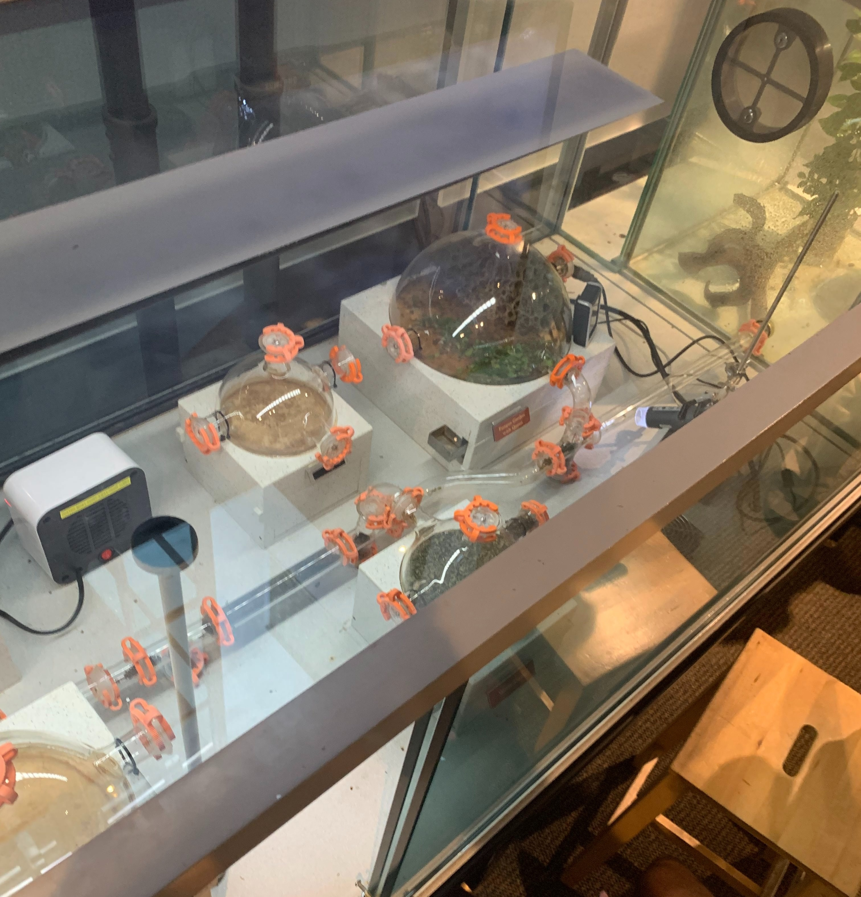
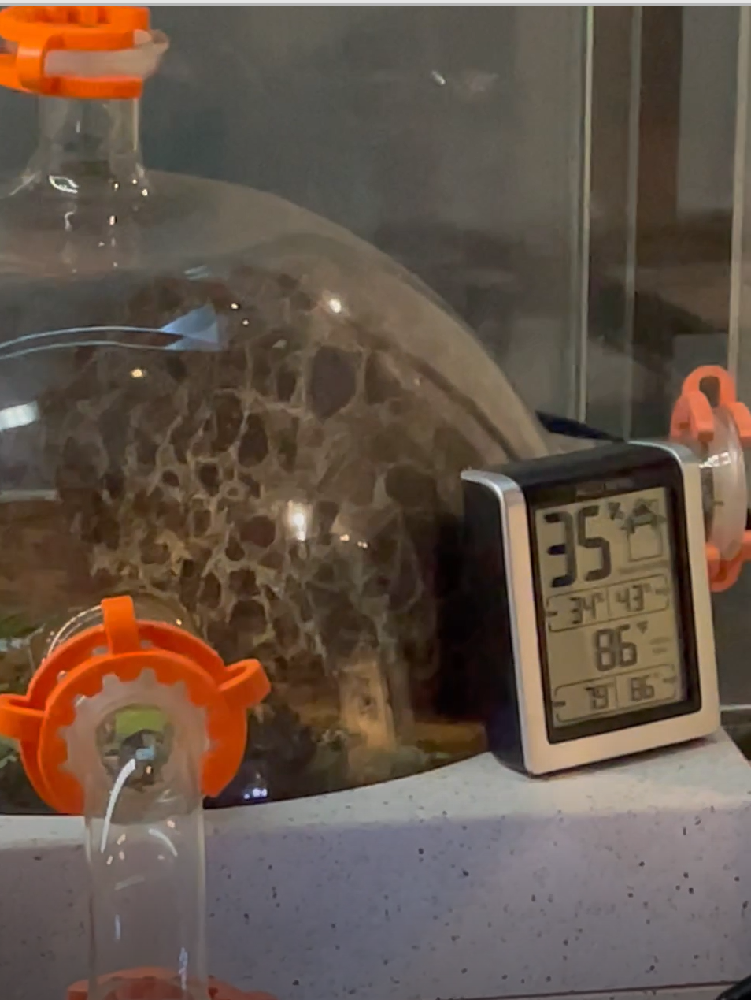
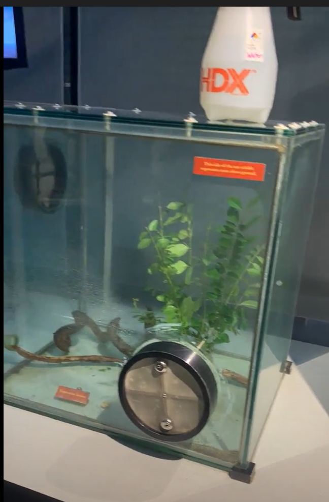
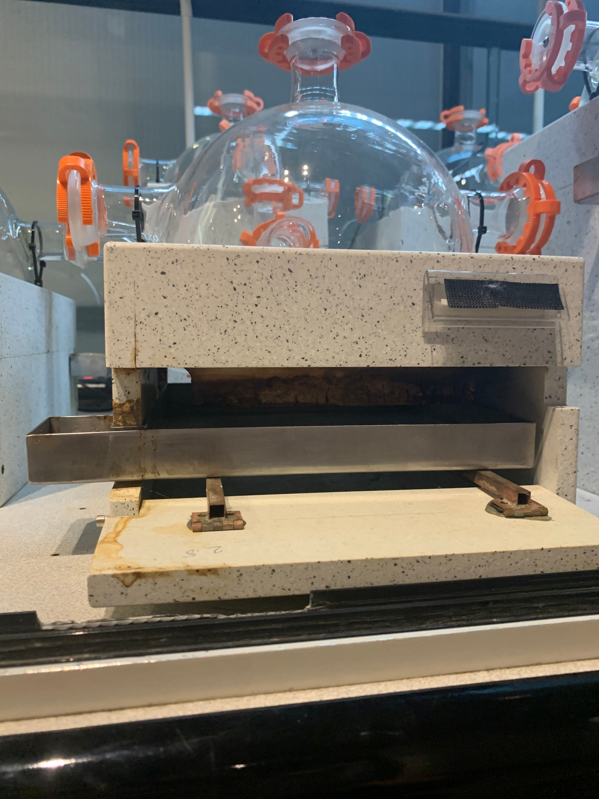
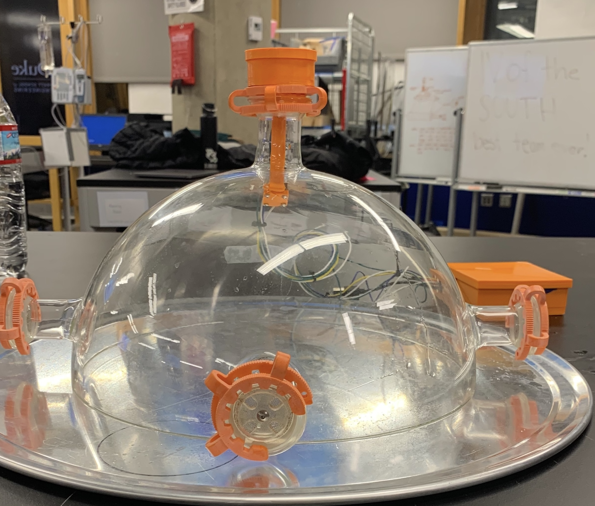
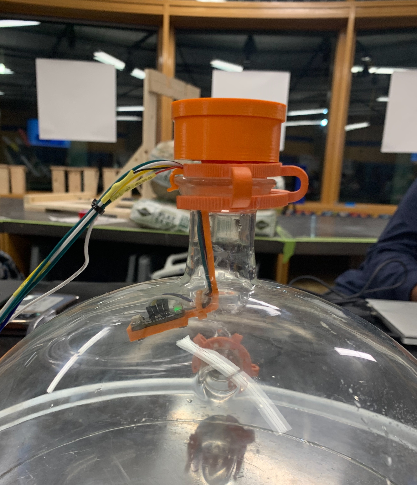
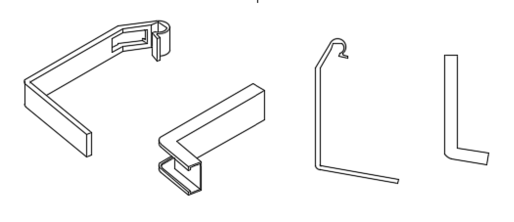

Me and a group of 3 other engineering majors at Duke were tasked with creating a custom humidification system for one the Durham Museum of Life and Science's exhibits. Specifically, their Leafcutter Ant exhibit needs to be consistently kept at about 80% humidity for optimal colony growth. In the past, this was done by staff members spraying the exhibit with mist once a day, but this was inefficient in terms of both staff effort and resulting humidity.
The primary goal of this project is to minimize direct staff involvement with this task while keeping humidity closer to the 80% goal consistently.
The leafcutter ant colony can grow over time, and thus we needed a system that was scalable in the event that exhibit size increased.
Once again, we wanted to keep direct staff involvement to a minimum, including the maintenance of the system that we build for humidification.



The Leafcutter Ant exhibit is a structure made up of many interconnected glass dome-like enclosures and a food chamber. In the past, museum staff would spray the food chamber with mist every day. As seen in the second image, the humidity readings as a result of this were about 35% on average (much lower than the goal of 80%).
To improve and automate this humidification process, we designed a custom part that holds water, an ultrasonic Humidifier, and a humidity sensor. This part was designed to fit on the tops of the glass domes (allowing for scalability if new domes were introduced). All of these humidifiers and sensors are monitored and operated via an ESP32 module on a custom PCB (also containing a multiplexer to assist with I2C communication with all sensors and humidifiers) with JST connectors to allow for easy installation.


All custom parts fit as expected on the glass domes and all data collection proceeded smoothly. Humidification was guided by a PID system that we programmed on the ESP32 and was based on the humidity sensor data. The system was also field tested and it performed quite well, maintaining about 70-80% humidity consistently. The water in each of the modules lasted for about 3-4 days, after which it needed manual refilling.
